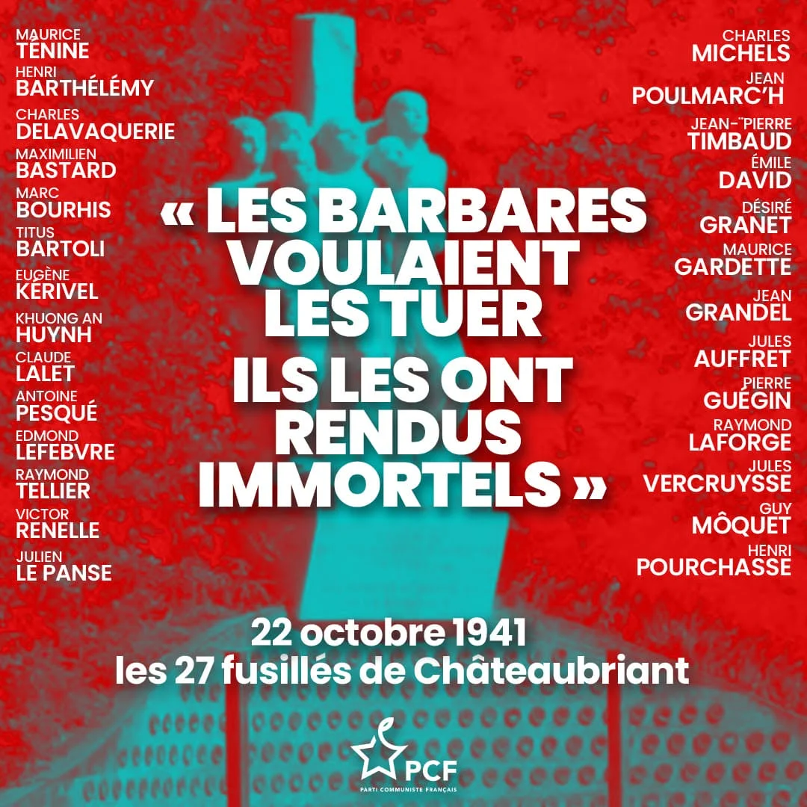

Publication relayée par le PCF 79
Le PCF rend hommage aux 27 fusillés de Châteaubriant
Date de mise à jour indiquée par Facebook · 20 octobre 2024
Texte de la publication · PCF national
Hommage aux 27 fusillés de Châteaubriant
Le 22 octobre 1941, 27 résistants, ouvriers, syndicalistes, communistes, furent exécutés par l'occupant nazi dans la carrière de Châteaubriant. Ces hommes, animés par le courage et la conviction d'une France libre et fraternelle, sont tombés pour notre liberté.
Aujourd'hui se tient la commémoration en leur hommage, à la Carrière de la Sablière.
Leurs visages et leurs noms résonnent encore comme des symboles d'héroïsme et de résistance. Ils se sont dressés contre le nazisme, préférant mourir debout que vivre à genoux.
"Les barbares voulaient les tuer, ils les ont rendus immortels," disait Georges Politzer.
Leur sacrifice n'a pas été vain. Leur mémoire nous rappelle, aujourd'hui encore, que la lutte pour la liberté, la justice et la dignité humaine est toujours d'actualité. Rendons hommage à ces héros et continuons leur combat pour un monde plus juste, plus humain.
Ne les oublions jamais.
#Hommage #Résistance #Mémoire #Châteaubriant #PCF

Sources
PCF national · publication relayée par le PCF 79 · bibliothèque Facebook · AR-0002-FB-01268
À lire aussi · À Châteaubriant, l’appel à la 83e commémoration des fusillés